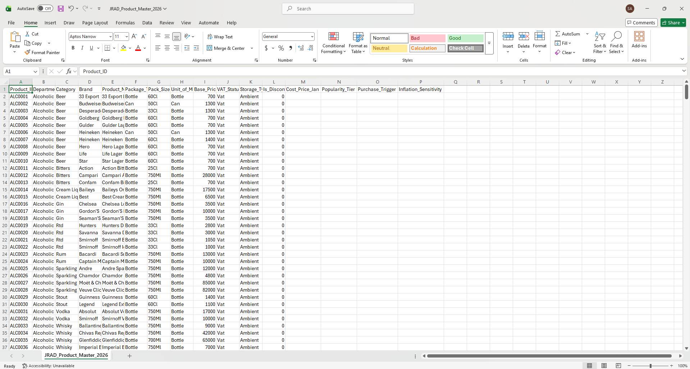
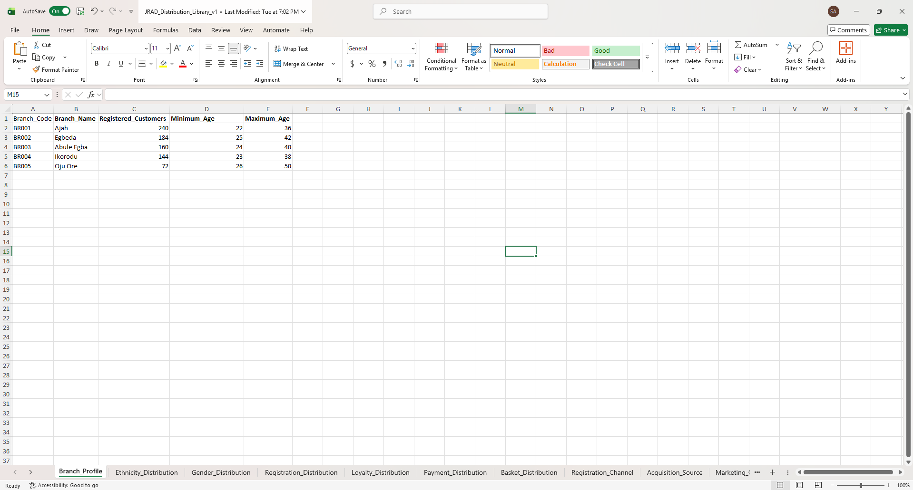
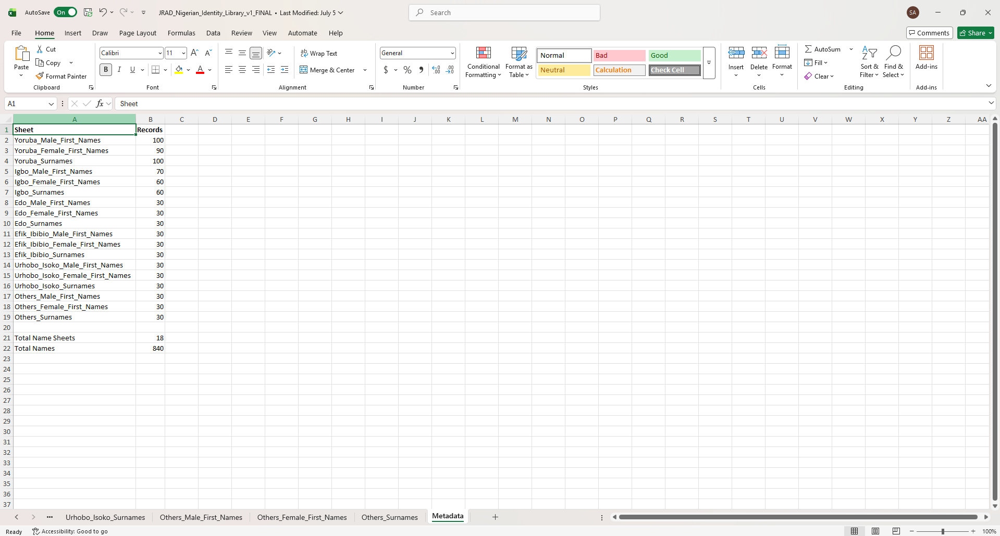
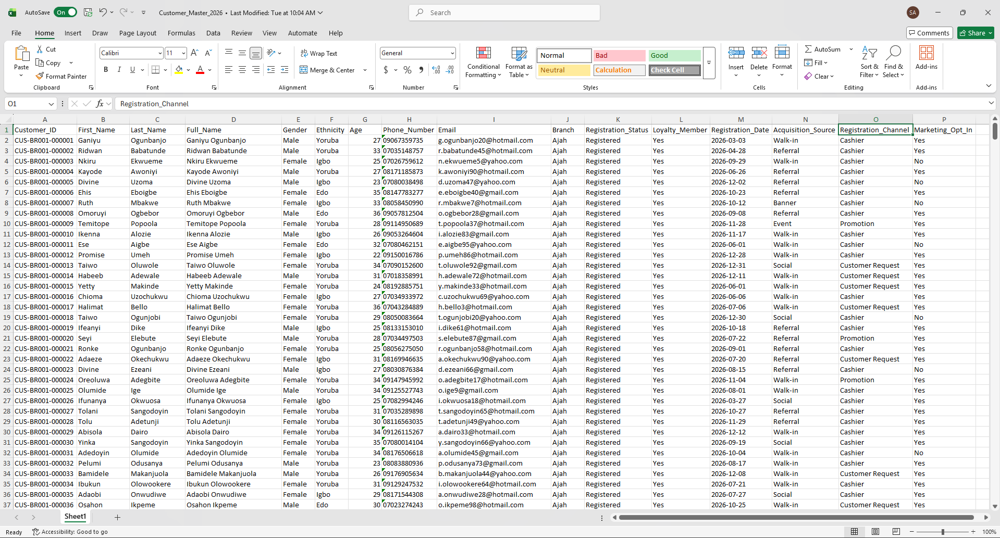
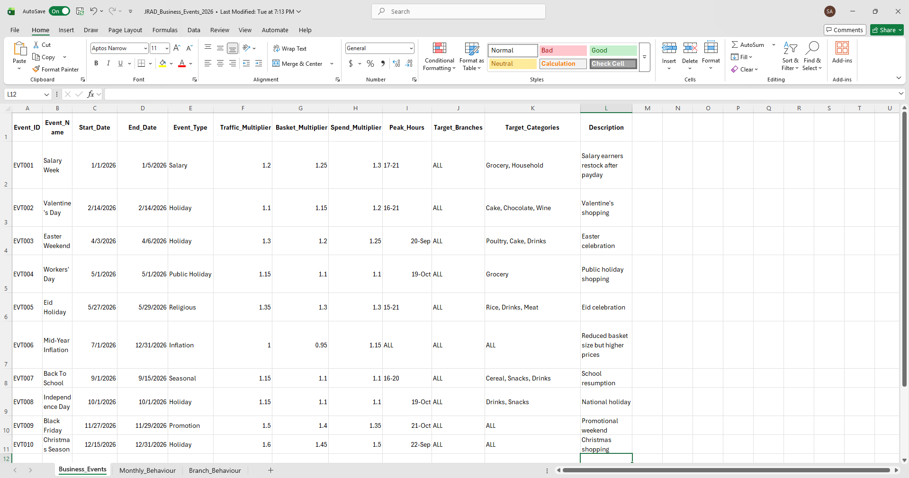
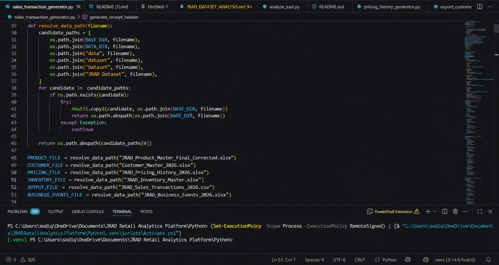
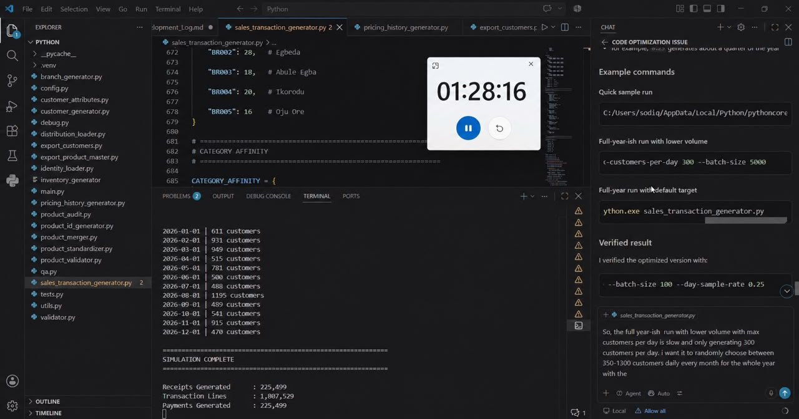

Project Disclaimer
JRAD Retail is a fictional and simulated retail environment created for portfolio and analytical purposes. The project is not affiliated with, endorsed by, or based on proprietary data from any real retailer.
The business scenarios and operational behaviours were informed by real-world observations of Nigerian superstore environments and were translated into custom business rules, probability distributions, and simulation logic.
Project Overview
The JRAD Retail Data System is a full-scale retail data engineering and analytics project inspired by real-life Nigerian superstore operations and customer shopping behaviour.
The project was designed to simulate a realistic retail environment, covering customer behaviour, product purchasing patterns, branch performance, loyalty activity, operational events, and customer experience.
Rather than using a simple ready-made dataset, the project involved designing and building a structured retail data ecosystem from the ground up.
Business Problem
Retail businesses generate large volumes of transactional and operational data. However, raw data alone does not provide meaningful business value.
The objective of this project was to create a realistic retail data environment that could be used to analyze:
- Sales and revenue performance
- Customer purchasing behaviour
- Branch performance
- Product and category performance
- Customer loyalty and retention
- Payment behaviour
- Operational efficiency
- Seasonal and event-driven shopping patterns
Project Scope
The JRAD Retail Data System simulates retail activity across multiple branches and includes:
- Customer master data
- Product master data
- Sales transactions
- Branch information
- Customer loyalty behaviour
- Payment behaviour
- Business events and seasonal patterns
- Customer experience and ratings
- Queue and operational metrics
- Product pricing history
Building the Retail Foundation
Product Master
The Product Master served as the commercial foundation of the JRAD Retail ecosystem. It defined the products available across the simulated business and established attributes that influence purchasing, pricing, demand, storage, and downstream transaction behaviour.

Distribution Library
A custom Distribution Library was created in Excel to define realistic distributions and business rules.
- Branch-level customer distribution
- Age distributions
- Demographic distributions
- Registration behaviour
- Loyalty membership behaviour
- Payment method distribution
- Basket size distribution
- Customer acquisition channels

Nigerian Identity Library
A separate Identity Library was created to generate realistic Nigerian customer identities using structured pools of first names, surnames, gender-specific names, and ethnic name groups.

Customer Master Output
The generation process produced structured customer records by combining identity data, demographic distributions, branch logic, registration behaviour, loyalty status, acquisition channels, and other defined business rules.

Business Events and Seasonality
The system incorporates simulated business events that influence customer traffic, basket size, customer spending, product demand, and peak shopping hours.

Python Data Generation
Transaction Generation Engine
A custom Python-based transaction generation engine was developed to simulate realistic retail activity across the JRAD Retail Data System. The generator applied business rules, customer behaviour, branch activity, product demand, pricing logic, and transaction patterns to create a large-scale simulated retail dataset.

Large-Scale Dataset Generation
The generation process produced 225,499 receipts and over 1.8 million transaction lines, creating a realistic retail dataset for further analysis in SQL, Excel, and Power BI.

Tools Used
Key Skills Demonstrated
- Data generation
- Data modelling
- Business rule design
- Synthetic data generation
- Distribution modelling
- Data architecture
- Data cleaning
- SQL analysis
- Business intelligence
- Dashboard development
Project Workflow
- Observed and documented realistic retail business behaviour.
- Designed the retail data structure.
- Created the Product Master dataset.
- Created the Distribution Library in Excel.
- Created the Nigerian Identity Library.
- Defined customer and business behaviour rules.
- Used Python to generate interconnected datasets.
- Loaded and prepared the data for SQL analysis.
- Developed analytical models and dashboards.
Project Outcome
The final result is a structured retail data ecosystem designed for end-to-end analytics.
The project demonstrates how real-world observations and business logic can be transformed into a scalable synthetic data system that supports analysis, reporting, and business intelligence.